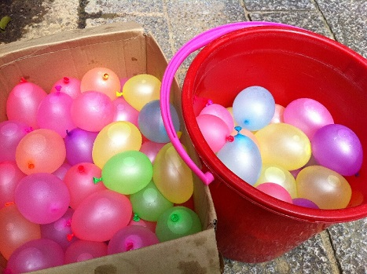

Water Balloons: Grenades of backyard battles
Water balloons, the savy combination of aquatic weaponry and childhood whimsy. Deadly and colorful!
Why are water balloons so great you ask? Check this out:
- They're inexpenseive.
- They're made for throwing at people.
- They're round and squishy.
- You can soak your enemies and leave them in a dripping state of total humiliation!
How to make these small devices of drenching destruction
Luckily no permit is required. Follow the steps below:
- Acquire water balloons. The more the better.
- Aqcuire water source, preferably an outside.
- Attach water balloon to nozzle.
- Fill balloon. Make sure to leave a small amount of air inside. This helps assure proper detonation.
- Tie the end of the balloon.
- Repeat as many times as you possibly can. This is an arms race.
- Revel in your new arsenal and picture your rivals bowing to you in cold puddles of defeat!
Click here to checkout the latest cutting-edge technology in water balloon science.
Click the image to pop a balloon!
